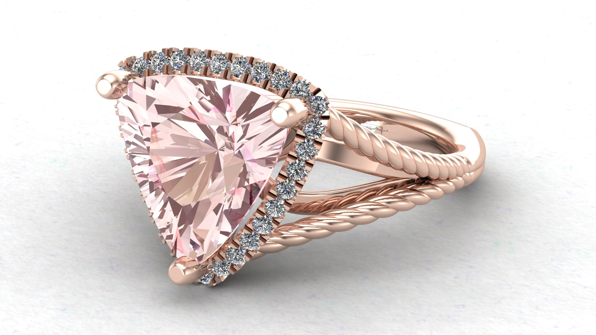

Make Your Dream Jewelery a Reality
Picture this, you meet the person of your dreams, you fall in love, and now it is time to express that love to the world. That means it is time to find the right engagement ring. Sadly, in a cookie-cutter world it can be difficult to find a style that expresses you and your love. Thats where we come in. At Melee Noel Designs we specilize in making your dream jewelry a reality.
We use only the finesest of recycled gold and platinum to keep our earth happy while making you happy. We also use the power of the sun for our model curing and believe in sustainabilty. All our designs are green friendly.
Not sure what you want, needs some inspiration, check out our gallery for a few inspirations. When you are ready we will sit down with you, either in person or via your preference of video chat, to help design your perfect peice.
Meet the Designer!
Hello, World. My name is Darrin Fry. I have been blessed to be in the jewelry industry for almost 13 years. This is such a happy place to be. Located in sunny Southern Utah, we get plenty of sunshine and lots of fresh air. Working closely with our clients is our specialty and we make your dream ring a reality.